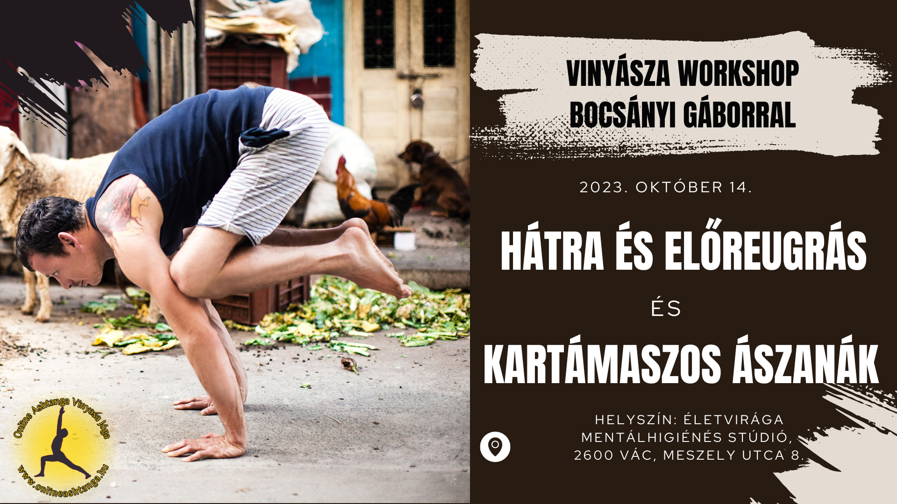

„Semmiféle teljesítmény vagy eredmény nem lehetséges erőfeszítés nélkül” Sri T. Krishnamacharya
Csípőnyitó workshop
2023. Október 14-én csípőnyitó workshop
Helyszín: Életvirága Mentálhigiénés Stúdióban.
2600 Vác, Meszely utca 8.

Kedves Gyakorló!
Egy nem mindennapi csípőnyitó workshopra invitállak!
13 éve szigorúan követem a Gurum, Ajay Kumar tanítását, tiszteletben tartva a Paramparát, és a tanultakat úgy adom tovább, ahogy Mysore-ban, Indiában tanultam tőle.
12 éve tanítom az ashtanga vinyasa jógát Vácon, most pár alkalom erejéig tartok workshopokat a Yoga Park Mozgásstúdióban.
Az Astanga Vinyásza jóga rendszerben a hátra- és az előreugrásnak nagy szerepe van.Sokaknak ez egy kritikus pont, éppen ezért nem is fektetnek kellő hangsúlyt rá. Pedig nagyon fontos a spirituális fejlődésben.
Mint minden a jógában, a gyakorlás ezen része is elősegíti az önismereti élmények megszerzését. Nagyszerű tanárom Ajay Kumar nem véletlenül kíséri különös figyelemmel a diákok hátra- és előreugró technikáit, ugyanis sokkal több rejlik spirituális szinten ebben a gyakorlatsorban, mint azt elsőre gondolnánk. A jóga a durva fizikai testen túl (ez az ami kézzelfogható), az energetikai testet (a prána, a nádík, a vájuk, és a csakrák), a finom fizikai testet (az elme, az intelligencia és a hamis egó) és a lelket (a valódi lényünk lénye, vagyis az önvalót) is fejleszti.
Minden óra, de különösen a workshopok célja a gyakorlók spirituális fejlődésének elősegítése.
Miért érdemes részt venni?
A jóga gyakorlása több mint fizikai gyakorlás, sőt...
Az ászanák és az azokat összekötő mozgás ( vinyásza ) gyakorlása közben mindenki megfigyelheti és megértheti, a saját maga működését, érzelmi és fizikai szinten.
A workshop célja, hogy mindenki átélje az érzést ahogyan kapcsolatba kerül a testével, és az állapotot amikor már nem akadály többé a fizikai test az önismeret útján.
Minden órán, de különösen a workshopon azt szeretném, hogy mindenki megértse a gyakorlás lényegét, és elsajátítsa a helyes kivitelezést, és megtapasztaljátok a vinyászák és az ászanák szépségét.
Ha nem szereted mert nehéznek tartod a hátra előre ugrást, akkor azért, ha szeretnéd magasabb szinten művelni, akkor azért gyere el.
Mire számíthatsz a workshopon?
A workshopok célja, hogy elmélyítsük a tudásunk és választ kapjunk a kérdéseinkre, előre lendítsük a fejlődésünk.
- Gyakorlatok és technikák: Megismerkedünk a hátra és előreugrás techinkájával, hogy mitől működik. Tanulunk kezdő rávezető, és haladó gyakorlatokat, hogy mindenki a saját szintjének megfelelően tudjon fejlődni. Megtanuljuk a kartámaszason ászanák és a kézenállás alapjait.
- A vinyászák jelentősége: A workshop során megtapasztaljuk, hogy a vinyásza fontos része a gyakorlásnak, amit ha helyesen gyaorlunk, nagyban hozzájárul a fejlődésünkhöz, hogy jobban megértsük magunkat és, hogy mi is az a jóga.
- Személyre szabott igazítások és tanácsok a résztvevőknek.
Jelentkezés és további információk:
3 órás alkalomra számíts, elmélet és gyakorlás.
Várunk kezdőt és haladót, hogy a mindennapi gyakorlást egy magasabb szintre tudjuk emelni.
Részvételi díj: 10,000 ft
Ha szeretnél részt venni a workshoppon, vagy kérdéseid vannak a részletekkel kapcsolatban, írj nekünk az info@onlineashtanga.hu e-mail címre.
Limitált a terem befogadóképessége, ezért jelentkezz időben ha szeretnéd biztosítani a helyed!
Namaste! 🙏🌞🕉️